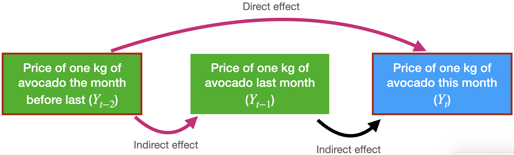
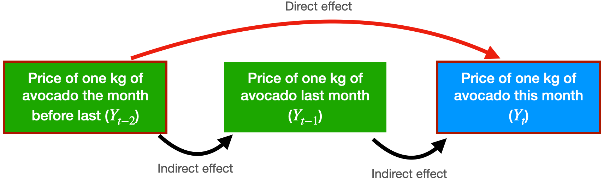

Autocorrelation Models
IN2004B: Generation of Value with Data Analytics
Agenda
- Autocorrelación
- El modelo ARIMA
- El modelo SARIMA
Autocorrelación
Problema con los modelos de regresión lineal
Los modelos de regresión lineal no incorporan la dependencia entre valores consecutivos de una serie de tiempo.
Esto es una pena porque respuestas registradas en periodos de tiempo cercanos tienden a estar correlacionadas. Esta correlación se llama autocorrelación de la serie de tiempo.
La autocorrelación nos ayuda a desarollar un modelo que puede hacer mejores pronósticos de respuestas futuras.
¿Qué es la correlación?
Es una medida de la fuerza y de la dirección de la relación lineal entre dos variables numéricas.
Específicamente, se utiliza para evaluar la relación entre dos conjuntos de observaciones.
La correlación está entre \(-1\) y 1.
¿Cómo medimos la autocorrelación?
Hay dos herramientas formales para medir la correlación entre las observaciones de una serie de tiempo:
La función de autocorrelación.
La función de autocorrelación parcial.
La función de autocorrelación
Mide la correlación entre respuestas que están separadas por \(j\) periodos.
Por ejemplo, la autocorrelación entre la temperatura presente y la temperatura registrada un día antes es la correlación entre las siguientes variables:
La autocorrelación entre las observaciones de la serie de tiempo y las observaciones un periodo atrás es: 0.586.
Calculo de Autocorrelación en Python
La función de autocorrelación comúnmente se visualiza usando una gráfica de barras.
El eje vertical muestra las diferencias (o lags) entre los periodos considerados, y el eje horizontal muestra las correlaciones entre las observaciones de distintos lags.
El diagrama de autocorrelación muestra que las respuestas y las de un mes atrás tienen una correlación alrededor de 0.438
También muestra que la correlación entre las respuestas actuales y las de 12 meses atrás estan altamente correlacionadas.
Lo mismo para las respuestas actuales y las respuestas tomadas 24 meses atrás.
Patrones de autocorrelación
Una autocorrelación fuerte (positiva o negativa) con un retraso \(j\) mayor que 1 y sus múltiplos (\(2k, 3k, \ldots\)) normalmente refleja un patrón cíclico o estacionalidad.
La autocorrelación positiva de retardo 1 describe una serie en la que los valores consecutivos se mueven generalmente en la misma dirección.
La autocorrelación negativa de retardo 1 refleja oscilaciones en la serie, donde los valores altos (generalmente) son seguidos inmediatamente por valores bajos y viceversa.
Más sobre la función de autocorrelación
Considera el problema de predecir el precio promedio de un kilo de aguacate en este mes.
Para esto tenemos el precio promedio del mes pasado y del antepasado.

La función de autocorrelación para \(Y_t\) y \(Y_{t-2}\) incluye el efecto directo e indirecto de \(Y_{t-2}\) sobre \(Y_t\).

La función de autocorrelación parcial
Mide la correlación entre respuestas que están separadas por \(j\) periodos, excluyendo la correlación debido a respuestas separadas por periodos intermedios.

En terminos técnicos, la función de autocorrelación parcial ajusta el siguiente modelo de regresión lineal
\[\hat{Y}_t = \hat{\beta}_1 Y_{t-1} + \hat{\beta}_2 Y_{t-2}\]
Donde:
- \(\hat{Y}_{t}\) es la predicción de la respuesta en el tiempo actual (\(t\)).
- \(\hat{\beta}_1\) es el efecto directo de \(Y_{t-1}\) en predecir \(Y_{t}\).
- \(\hat{\beta}_2\) es el efecto directo de \(Y_{t-2}\) en predecir \(Y_{t}\).
La autocorrelación parcial entre \(Y_t\) y \(Y_{t-2}\) es igual a \(\hat{\beta}_2\). ##
La función de autocorrelación parcial se visualiza usando una gráfica similar a la de la autocorrelación.
El eje vertical muestra las diferencias (o lags) entre los periodos considerados, y el eje horizontal muestra las correlaciones parciales entre las observaciones de distintos lags.
El diagrama de autocorrelación muestra que las respuestas y las de un mes atrás tienen una correlación alrededor de 0.4387
También muestra que la correlación entre las respuestas actuales y las de 6 y 7 meses atrás están altamente correlacionadas.
El modelo ARIMA
Modelos Autoregresivos
Los modelos autoregresivos son un typo de modelo de regresión lineal que incorporan directamente la autocorrelación de la serie de tiempo para predecir la respuesta actual.
Su carácteristica principal es que los predictores del valor actual de la serie son sus valores anteriores.
En términos matemáticos, un modelo autoregresivo de orden 2 tiene la forma matemática: \(\hat{Y}_t = \hat{\beta}_0 + \hat{\beta}_1 Y_{t-1} + \hat{\beta}_2 Y_{t-2}.\)
Uno de orden 3 se ve así: \(\hat{Y}_t = \hat{\beta}_0 + \hat{\beta}_1 Y_{t-1} + \hat{\beta}_2 Y_{t-2} + \hat{\beta}_3 Y_{t-3}.\)
Modelos ARIMA
Una clase especial de modelos autoregresivos son los modelos ARIMA (Autoregressive Integrated Moving Average).
Un modelo ARIMA se compone de tres elementos
- Operadores diferenciados o integrados (integrated).
- Términos autoregresivos (autoregressive).
- Términos estocásticos (moving average).
El modelo SARIMA
Estacionalidad
La estacionalidad consiste en un comportamiento repetitivo o cíclico que ocurre con una frecuencia constante.
Se puede identificar de la gráfica de la serie o usando las ACF and PACF.
Para esto, debemos haber removido la tendencia.
En Python
Modelo SARIMA
El modelo SARIMA (Seasonal Autoregressive Integrated Moving Average) es una extensión del modelo ARIMA para modelar los patrones de estacionalidad.
El modelo SARIMA tiene tres elementos adicionales para modelar la estacionalidad en la serie de tiempo.
- Operadores diferenciados o integrados (integrated) para la estacionalidad.
- Términos autoregresivos (autoregressive) para la estacionalidad.
- Términos estocásticos o promedios móviles (moving average) para la estacionalidad.
Notación
La estacionalidad en una serie de tiempo es un patrón regular de cambios que se repite durante \(S\) períodos de tiempo, donde \(S\) define el número de períodos de tiempo hasta que el patrón se repite nuevamente.
Por ejemplo, hay estacionalidad en los datos mensuales para los cuales los valores altos siempre tienden a ocurrir en algunos meses en particular y los valores bajos siempre tienden a ocurrir en otros meses en particular.
En este caso, \(S=12\) (meses por año) es el lapso del comportamiento estacional periódico. Para datos trimestrales, \(S=4\) períodos de tiempo por año.
Diferenciación estacional
Es la diferencia entre una respuesta y una respuesta con un rezago que es múltiplo de \(S\).
Por ejemplo, con datos mensuales \(S=12\),
- Una diferencia estacional de nivel 1 es \(Y_{t} - Y_{t-12}\).
- Una diferencia estacional de nivel 2 es \((Y_t - Y_{t-12}) - (Y_{t-12} - Y_{t-24})\).
La diferenciación estacional elimina la tendencia estacional y también puede eliminar un tipo de no estacionariedad de paseo aleatorio estacional.
Términos de los modelos AR y MA para estacionalidad
En el SARIMA, los términos de los componentes AR y MA estacionales predicen la respuesta actual (\(Y_t\)) usando respuestas y errores en momentos con rezagos que son múltiplos de \(S\).
Por ejemplo, con datos mensuales \(S = 12\),
- El modelo AR estacional de orden 1 usaría \(Y_{t-12}\) para predecir \(Y_{t}\).
- El modelo AR estacional de orden 2 usaría \(Y_{t-12}\) y \(Y_{t-24}\) para predecir \(Y_{t}\).
- El modelo MA estacional de orden 1 usaría el término estocástico \(a_{t-12}\) como un predictor.
- El modelo MA estacional de orden 2 usaría los términos estocásticos \(a_{t-12}\) y \(a_{t-24}\) como predictores.